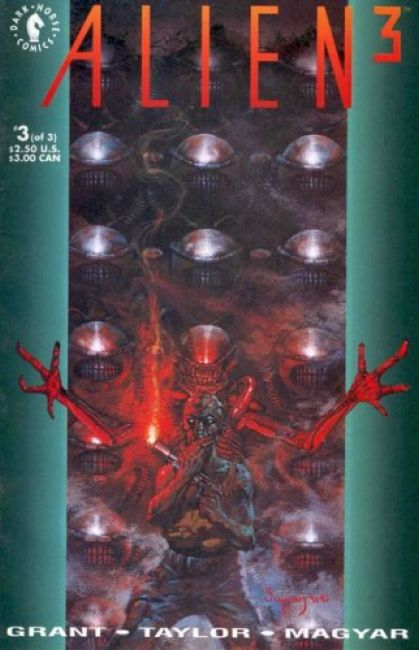
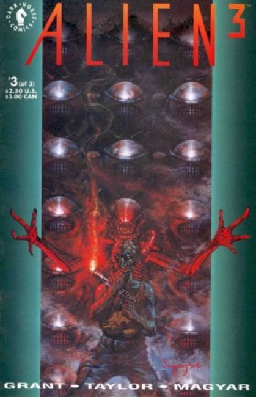

 In 2179 a fire starts aboard the Colonial Marine spaceship Sulaco. The computer launches an escape pod containing Ellen Ripley, the young girl Newt, Hicks, and the damaged android Bishop; all four are in cryonic stasis. Scans of the crew's cryotubes show a queen facehugger attached to one member.
The pod crash lands on Fiorina "Fury" 161, a foundry facility and penal colony inhabited by male inmates with double-Y chromosome syndrome, a genetic mutation present in some males in the 22nd century which gives the afflicted individual a predisposition for brutal antisocial behavior such as rape and murder.
The inmates recover the crashed pod and its passengers. Only Ripley survives, the bodies of Newt and Hicks are cremated.
Elsewhere in the prison, a quadrupedal alien bursts from Spike. Growing to full size, the alien kills Murphy, Boggs, and Rains and returns outcast prisoner Golic to his previously psychopathic state. Ripley finds the damaged Bishop and re-activates him, who then confirms that a facehugger came with them to Fiorina in the escape pod.
Ripley informs Andrews of her previous encounter with the xenomorphs and suggests everyone work together to hunt down and kill it. The highly skeptical Andrews does not believe her story, and explains that even if he were hearing the truth, the facility is without weapons; their only hope is the rescue ship being sent for Ripley by the Weyland-Yutani Corporation.Ripley scans herself using the escape pod's medical equipment and discovers the embryo of a xenomorph queen growing inside her. She also discovers that Weyland-Yutani hopes to turn the Aliens into biological weapons.
They form a plan to lure the Dragon into the foundry's molding facility, trap it via a series of closing doors, and drown it in molten lead. The bait-and-chase plan results in the deaths of all the remaining prisoners except Dillon and Morse. Dillon remains in the mold to distract the antagonist, allowing it to tear him apart as Morse pours the molten lead onto them. Although the beast is covered in molten metal, it escapes the mold but Ripley activates the fire sprinklers, causing its molten metal exoskeleton to cool rapidly and shatter, killing it.
The Weyland–Yutani commando team arrives, including a man who looks identical to Bishop, who explains that he is Bishop's creator. He tries to persuade Ripley to undergo surgery to remove the queen embryo, which he falsely claims will be destroyed, but which in reality would be used as a biological weapon. Ripley refuses and steps back onto a mobile platform, which Morse positions over the furnace.
The Weyland–Yutani team shoot Morse in the leg in a late effort to stop him; Aaron strikes the Bishop look-a-like with a wrench and is shot dead. Ignoring Bishop's pleas to give them the embryo, Ripley throws herself into the furnace as the infant queen erupts from her chest. Ripley grabs it to prevent it from escaping as they both fall into the furnace.